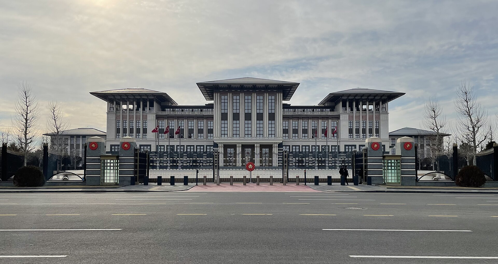

Vol. I · No. 50 · Tuesday, July 7, 2026 · 15 items · ~15 min read
A day when the biggest moves were institutional: Trump opened a NATO summit in Ankara demanding five percent of GDP now, Hamas folded the government it had run for twenty years, and Microsoft took 3,200 jobs out of Xbox.
The Front · The World · Ankara · cross-spectrum LLLC
Trump opens the NATO summit in Ankara with a demand: five percent of GDP, and not in 2035

Turkey's Presidential Complex in Ankara, where the 36th NATO summit convened July 7. — Wikimedia Commons
The 36th NATOInstitutionThe 32-member North Atlantic alliance. Its collective-defense pledge, Article 5, has been invoked once, after September 11. summit opened Tuesday at Turkey's Presidential Complex in Ankara, only the second time Turkey has hosted, with all 32 members plus Ukraine's Volodymyr Zelensky and South Korea's Lee Jae-myung in attendance. President Trump arrived pressing allies to commit to spending five percent of GDPConceptNATO's Hague-summit spending target: 3.5% of GDP on core defense plus 1.5% on broader resilience, previously pegged to 2035. on defense now, rather than by the 2035 date set at last year's Hague summit. "Trump fully expects that all allies will step up immediately," said Matt Whitaker, the U.S. ambassador to NATO.
Poland already leads the alliance at roughly 4.48 percent of GDP and Lithuania sits at 4 percent, but most members remain well short, and a U.S. official previewed "billions of dollars in announcements" on the sidelines, with allies said to have committed $139 billion in additional spending, roughly half of it on American-made equipment. A ZelenskyPersonPresident of Ukraine, attending as a partner. He is pressing for more Patriot interceptors after Russia's July 5-6 barrage on Kyiv killed at least 27.-Trump bilateral is set for Wednesday, with Kyiv seeking Patriot air-defense interceptors after an overnight Russian barrage on July 5-6 killed at least 27 and, by Ukraine's account, downed none of the 29 ballistic missiles fired.
The venue itself is contested: Turkish police detained more than 100 anti-NATO protesters across Istanbul, Ankara, and Izmir, and analysts noted the Ankara setting hands ErdoganPersonRecep Tayyip Erdogan, Turkey's president since 2014, hosting his second NATO summit. Critics say the venue lends legitimacy to his consolidation of power. a diplomatic showcase at a moment when his consolidation of power draws Western criticism.
"Trump fully expects that all allies will step up immediately."
— Matt Whitaker, U.S. ambassador to NATO, July 7
The Front · The World · Gaza · cross-spectrum LLLCLR
Hamas dissolves the government it ran for twenty years, ceding Gaza to a UN-backed committee
Hamas announced Monday it had dissolved the body that governed Gaza for roughly two decades, with the head of its emergency committee, Mohammed al-Farra, submitting his resignation. Civilian authority is to pass to the National Committee for the Administration of GazaInstitutionA Cairo-based technocratic body slated to run Gaza's day-to-day civilian affairs, chaired by Gaza-born engineer Ali Shaath., a Cairo-based technocratic panel chaired by Ali Shaath, a Gaza-born engineer and former Palestinian Authority official.
The committee is to operate under the supervision of the United Nations and the U.S.-founded Board of PeaceInstitutionThe body overseeing Gaza's transition under the October 2025 peace plan; it says it will judge Hamas "by actions, not promises.", the oversight body created under the October 2025 peace plan. High representative Nickolay MladenovPersonVeteran Bulgarian diplomat and former UN Middle East envoy, now high representative of the Board of Peace. called it a step toward "bringing the roadmap discussions to a successful conclusion," and said only technical staff would remain to run daily affairs.
The Front · Corporate · London
EasyJet backs a £5.5bn take-private by a private-credit house
The board of EasyJet agreed in principle to a sweetened cash offer from CastlelakeInstitutionA Minneapolis-based alternative-asset manager with deep aviation-finance expertise, taking a listed airline private in a rare move for a private-credit firm., the Minneapolis alternative-asset manager, at £6.90 a share, valuing the airline's equity at about £5.5 billion ($7.3 billion) fully diluted. Shares jumped roughly 10 percent Monday, and the offer marks a 73 percent premium to EasyJet's May 29 close, when Castlelake first disclosed its interest.
It is Castlelake's fifth bid, and the board is now "minded to recommend," with the deadline for a firm offer extended into next month. The striking feature is the buyer: a private-creditConceptNon-bank lending by asset managers, a market that has swelled past $1.7 trillion. A private-credit shop taking an airline fully private is unusual. firm taking an entire low-cost carrier off the public market via a take-privateConceptAn acquisition that removes a company's shares from public trading, typically financed with substantial debt., a structural signpost for how far alternative capital has pushed into industries once financed by public equity.
In an on-stage conversation reported Monday by STAT's Matt HerperPersonSenior writer at STAT covering medicine and biotech; he conducted the interview., Dario AmodeiPersonCo-founder and chief executive of Anthropic, and author of the 2024 essay "Machines of Loving Grace." conceded that artificial intelligence is not yet compressing biomedical progress the way he once forecast. "I don't think that today we can make progress at a rate of 10 years per year," he said, contrasting his own 2024 essay, "Machines of Loving Grace"ConceptAmodei's 2024 essay arguing AI could deliver "a century's worth of progress" in medicine within a decade., which argued AI could deliver "a century's worth of progress in a decade."
Amodei suggested that vision might not become visible for roughly another decade. The remarks were tied to the June 30 launch of Claude Science, Anthropic's workbench wiring its top model to more than 60 scientific databases across genomics, proteomics, and cheminformatics, and they land as the company's roughly trillion-dollar valuation rests on exactly the acceleration thesis he is now hedging.
Tuesday, July 7 is the last day Claude Fable 5ConceptAnthropic's top-tier frontier model, briefly pulled under US export controls June 12 and re-released globally July 1. is included in Anthropic's Pro, Max, Team, and select Enterprise plans at no extra cost, drawing on up to half of weekly usage limits. From July 8, access requires usage creditsConceptAnthropic's pay-as-you-go metered layer, billed at API rates on top of a subscription. at $10 per million input tokens and $50 per million output tokens, double the rate of Claude Opus 4.8 and the most expensive pricing the company has listed for a generally available model.
Users who do not enable credits lose Fable 5 access entirely on July 8. Anthropic frames the shift as capacity-driven and says it aims to fold the model back into standard subscriptions "as soon as capacity allows." The move follows the July 1 global re-release of Fable 5 after U.S. export controlsConceptFederal restrictions applied June 12 that briefly barred foreign access to Anthropic's top models, lifted July 1., applied June 12, were lifted.
Markets & Deals
Capital markets, M&A, and the flow of money
Corporate · Washington
Trump rings both opening bells from the Oval Office to launch "Trump Accounts"
The New York Stock Exchange, which opened jointly with the Nasdaq for the first time July 6. — Wikimedia Commons
President Trump rang the New York Stock Exchange and Nasdaq opening bells simultaneously from the Oval Office on Monday, the first time a sitting president has done so and the first time the two exchanges opened trading jointly, to launch Trump AccountsConceptTax-advantaged child investment accounts created under the 2025 Working Families Tax Cuts Act, seeded with a $1,000 federal deposit per eligible child., the tax-advantaged child accounts created under the Working Families Tax Cuts ActConceptThe 2025 tax law that created Trump Accounts, funding a $1,000 federal seed deposit for eligible newborns and children.. More than 6 million children are enrolled, 1.4 million of them eligible for a $1,000 federal seed deposit, roughly $1.4 billion in Treasury money.
Trump told viewers to "go out and buy a Dell computer," and shares of DellInstitutionRound Rock, Texas maker of PCs and AI servers; its AI-server order backlog was cited at a record $51.3 billion. rose more than 7 percent; the company's AI-server backlog was cited at a record $51.3 billion, and Michael and Susan Dell pledged more than $6 billion to the program. The spectacle of a president moving a single stock from the Oval Office, and disclosing a personal plug, is its own governance curiosity.
Corporate · South Florida · Miami
Miami's H.I.G. Capital strikes a majority-stake deal for German infrastructure builder TERRAS
H.I.G. CapitalInstitutionMiami-based global alternative-investment firm, roughly $75 billion in assets, founded 1993 by Sami Mnaymneh and Tony Tamer., the Miami alternative-investment firm with about $75 billion under management, signed a definitive agreement Monday to acquire a majority stake in the TERRAS GroupInstitutionA 2014-founded German infrastructure engineering and construction firm based in Montabaur., a leading infrastructure engineering and construction provider across the DACH regionPlaceGermany, Austria, and Switzerland, the German-speaking European market.. Founded in 2014 and based in Montabaur, TERRAS works in mobility, energy, digital, water, and urban development, including rail construction and special foundation engineering.
Co-founders Dirk Sojka and Ralf Sojka will reinvest alongside H.I.G. in a founder-rollover structure; deal terms were not disclosed. For a Greenberg-Traurig-bound Miami reader, it is a reminder that the city's home-grown sponsors are now writing European infrastructure checks, not just domestic ones.
Corporate · Commentary
Money Stuff: the one-dollar-to-two arbitrage of faking Spotify streams
Bloomberg's Matt LevinePersonBloomberg Opinion columnist and former Goldman Sachs banker; his Money Stuff newsletter is the daily read on Wall Street's odder mechanics. used Monday's Money StuffConceptLevine's daily Bloomberg Opinion newsletter dissecting the mechanics and mischief of Wall Street. to lay out the economics of streaming fraud built around a criminal case: an artist earns a few dollars per 1,000 legitimate SpotifyInstitutionThe dominant music-streaming platform; its per-stream royalty is the price fraudsters arbitrage. streams, but bots can manufacture 1,000 fake streams for roughly $1, so spending a dollar to conjure streams that pay about two dollars becomes, mechanically, a (fraudulent) business.
Levine's point is that the platform's per-stream payout is a price that fraud can arbitrage, and neither Spotify nor federal prosecutors approve of the trade. It is the signature Money Stuff move: find the place where a well-meaning payment formula creates an exploitable spread, then follow the incentive to the indictment.
Law & the Courts
The bench, the regulators, and the profession
Law · New York
Kasowitz is sued by its own Columbia clients over a $6.4M cut of the antisemitism settlement
Columbia University's Low Memorial Library. — Wikimedia Commons
Six Jewish Columbia students sued Kasowitz LLPInstitutionNew York litigation-focused firm known for aggressive, high-rate representation; founder Marc Kasowitz is a longtime Trump personal attorney. and founder Marc KasowitzPersonFounder of Kasowitz LLP and a longtime personal lawyer to Donald Trump. for malpractice, alleging the firm improperly took a $6.4 million fee, more than half of a confidential settlement with Columbia reported to exceed $10 million on behalf of roughly 43 Jewish and Israeli students. The complaint says clients were handed sweeping releases and told to sign within five days, by December 26, during the Christmas holiday.
When clients asked for bills, the firm allegedly produced only a "summary" claiming more than 7,700 hours, with Kasowitz's own time billed at $2,500 an hour, a figure squarely in fee-reasonablenessConceptUnder the professional-conduct rules a lawyer's fee must be reasonable; an excessive fee is both an ethics violation and malpractice exposure. territory. The firm called the suit "gross misrepresentations and false claims," noting the plaintiffs "signed releases and fully accepted all the benefits."
Law · Wilmington
Delaware's first read on the amended §144 safe harbor raises the pleading bar
The Harvard Law Forum on Corporate GovernanceInstitutionThe leading online clearinghouse for corporate-governance and M&A commentary, often authored by practicing deal lawyers. published a Paul Weiss analysis Monday of Ayers v. Foley, the first Court of ChanceryInstitutionDelaware's specialized business court, whose rulings set the template for most of U.S. corporate law. decision interpreting the 2025 amendments to DGCL §144ConceptDelaware's conflicted-transaction statute; the 2025 amendments give a cleansing presumption when exchange-independent directors approve a deal., Delaware's conflicted-transaction statute. Vice Chancellor Lori Will's June 15 opinion arose from a stockholder challenge to a $50 million retention grant to Fidelity National Financial chairman William P. Foley and to director self-pay.
The court dismissed the challenge to Foley's grant: because the approving committees met national-exchange independence standards, they triggered a heightened presumption of disinterestedness under §144(d)(2), though the director self-compensation claim survived. The takeaway is that the amended statute materially raises what a plaintiff must plead to get around director independence at a listed company.
Law · Atlanta
En banc Eleventh Circuit strikes Alabama's blanket bar on offenders living with their own children
Sitting en bancConceptA rehearing by the full circuit rather than a three-judge panel, reserved for exceptionally important questions and binding circuit-wide., the Eleventh CircuitInstitutionThe federal appeals court covering Florida, Georgia, and Alabama. ruled 8-5 Monday that Alabama's lifetime ban on adults convicted of a child sex offense residing overnight with any minor, including their own children, violates the Fourteenth Amendment. Judge Robin Rosenbaum, applying strict scrutinyConceptThe most demanding constitutional test: a law must be narrowly tailored to a compelling government interest., called the statute "overinclusive, underinclusive, and more restrictive than other effective alternatives," with "no escape hatch whatsoever."
The plaintiff pleaded guilty in 2013 to possessing child pornography, served his time, and has been barred from living with his son for about four years. The ruling, now binding in Florida, Georgia, and Alabama, remands the case and signals that Alabama's fix is a case-by-case fitness process rather than a categorical ban.
The World
Consequence beyond the calendar
News · Damascus · cross-spectrum LLLCLR
Bombs wound 18 in Damascus as Macron makes the first Western-leader visit to post-Assad Syria
Damascus at sunset. — Wikimedia Commons
Two improvised explosive devices detonated near the Four Seasons Hotel in Damascus on Tuesday, wounding at least 18 people including four police officers, with no deaths reported, Syria's Interior Ministry said. One device was in a parked car, the other in a garbage container. Emmanuel MacronPersonPresident of France; he led the push to get the EU and US to drop most Syria sanctions after Assad's fall. was inside the presidential palace meeting Syrian president Ahmad al-SharaaPersonSyria's president since the 2024 fall of Assad, a former rebel commander now courting Western investment. when the blasts struck; his office said he was safe and the meeting continued.
Macron had arrived Monday night with a delegation of French investors, the first visit by a Western European head of state since Assad's fall in 2024, after playing a lead role in easing Western sanctions. The blasts follow a July cafe bombing near the Justice Palace that killed at least 10, and Macron heads next to the NATO summit in Ankara.
News · Havana · cross-spectrum LLLCR
Cuba's national grid collapses a third time this year, leaving 10 million dark
Cuba's national electric system fully disconnected around midday Monday, the state utility Unión EléctricaInstitutionCuba's state electricity utility, which confirmed the entire grid went offline. confirmed, leaving roughly 10 million people without power in the island's third nationwide blackout of 2026. Public transport largely halted and officials said tens of thousands of surgeries were canceled; one generating unit came back online about two hours later.
The collapse traces to a decrepit grid compounded by a U.S. oil blockade imposed in January, after which Washington has let only one tanker dock, and by the loss of Venezuelan crude following the 2026 U.S. intervention that ousted Maduro. President Miguel Díaz-CanelPersonCuba's president; he accused Washington of trying to induce "a social explosion through asphyxiation." accused Washington of trying to induce "a social explosion through asphyxiation," and the foreign minister planned to raise the blockade at the UN.
Entertainment & EASL
Screen, stage, sport, and the business of all three
Culture · Redmond
Xbox cuts 3,200 jobs and sheds four studios in its "most significant restructure"
An Xbox booth at Gamescom. — Wikimedia Commons
Xbox chief executive Asha SharmaPersonCEO of Xbox, who announced the July 2026 restructure as the "most significant" in the division's history. announced Monday up to 3,200 job cuts through fiscal 2027, roughly 20 percent of the division, with about 1,600 roles going this week, in what she called the "most significant restructure in company history." Four studios are being divested: Ninja Theory and Undead Labs are to be sold to undisclosed buyers, while Compulsion Games and Double Fine return to their management teams as independents, keeping their intellectual property and back catalogs.
A fifth studio, France-based Arkane LyonInstitutionThe French studio behind Dishonored and Deathloop, now in works-council consultation over its future., has begun consultation with its works councilConceptA French labor body that must be consulted before a restructuring or closure, a legally required process. to "review potential strategic options." Sharma said none of Xbox's publicly announced first-party games are being canceled; the cuts span Activision, Bethesda, Blizzard, King, and Mojang, after a division that reportedly spent more than $20 billion over five years saw annual revenue shrink.
Culture · New York
Meg Stalter takes over "Oh, Mary!" as a record-setting run turns over its star
Meg StalterPersonComic actor known for Hacks, making her Broadway debut as Mary Todd Lincoln. began her Broadway debut as Mary Todd Lincoln in Oh, Mary!InstitutionCole Escola's hit comedy; it became the first show at its theatre in 121 years to gross more than $1 million in a single week. on Monday, a 10-week engagement running through September 12. She succeeds Maya RudolphPersonEmmy-winning comic actor whose Oh, Mary! run pushed the show's average ticket to a record $220.77., whose final performance was July 5 and whose run pushed the show's average ticket price to a record $220.77.
Oh, Mary! became the first production in its theatre's 121-year history to gross more than $1 million in a single week. The same night, off-Broadway, The Whoopi Monologues, written by Whoopi Goldberg and starring Kerry Washington, began previews at Lincoln Center's Mitzi E. Newhouse ahead of a July 14 opening.
Compiled by Matthew Yellin · mattyellin.com · Est. May 2026 · A cross-spectrum brief drawn each morning from wires, filings, and the trade press